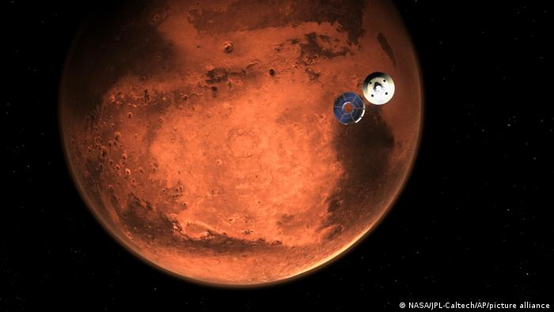
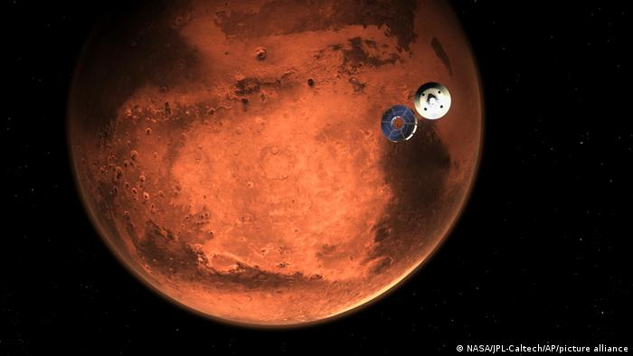
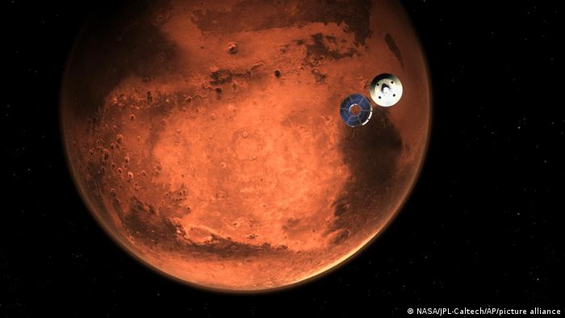
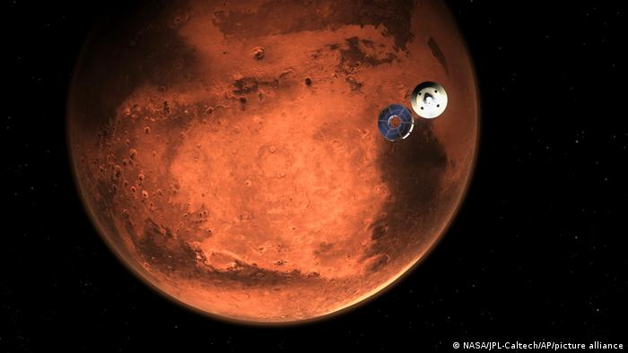

Mars, Güneş Sistemi'nin Güneş'ten itibaren dördüncü gezegeni. Roma mitolojisindeki savaş tanrısı Mars'a ithafen adlandırılmıştır. Yüzeyindeki yaygın demir oksitten dolayı kızılımsı bir görünüme sahip olduğu için "Kızıl Gezegen" de denir. İnce bir atmosferi olan Mars gerek Ay'daki gibi meteor kraterlerini, gerekse Dünya'daki gibi volkan, vadi, çöl ve kutup bölgelerini içeren çehresiyle bir yerbenzeri gezegendir. Ayrıca dönme periyodu ve mevsim dönemleri Dünya’nınkine çok benzer. 2 adet uydusu bulunmaktadır.